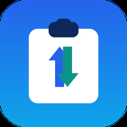
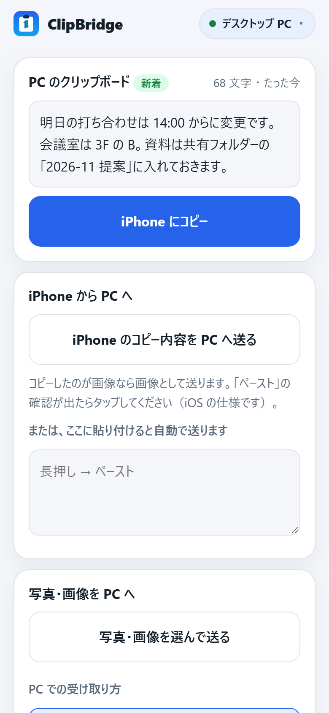
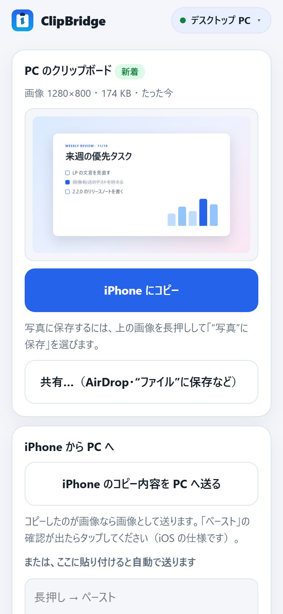
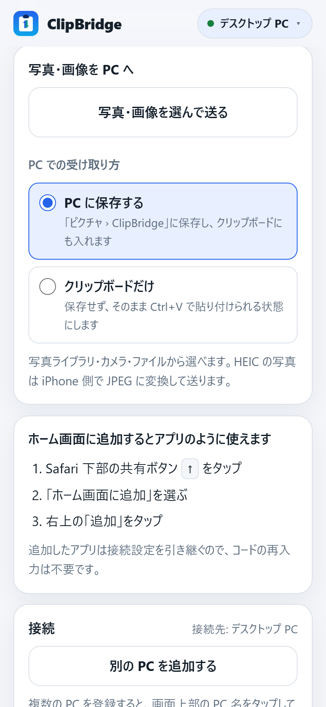
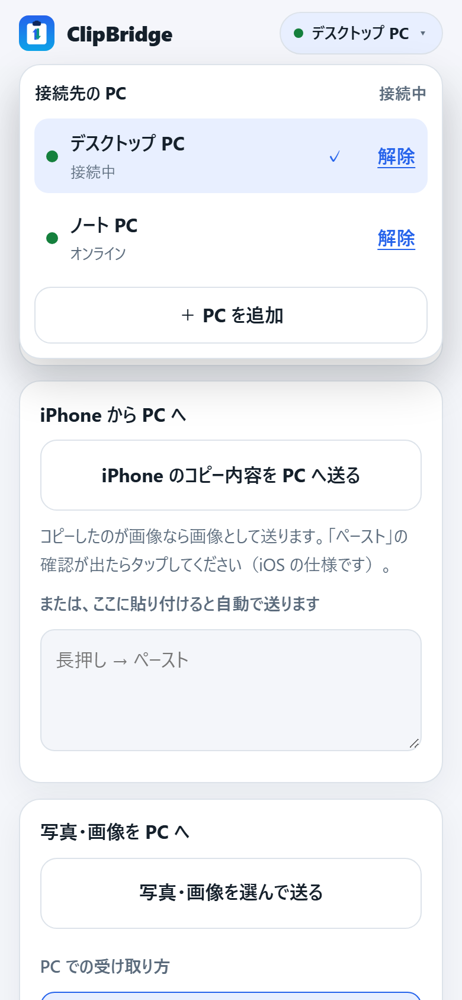
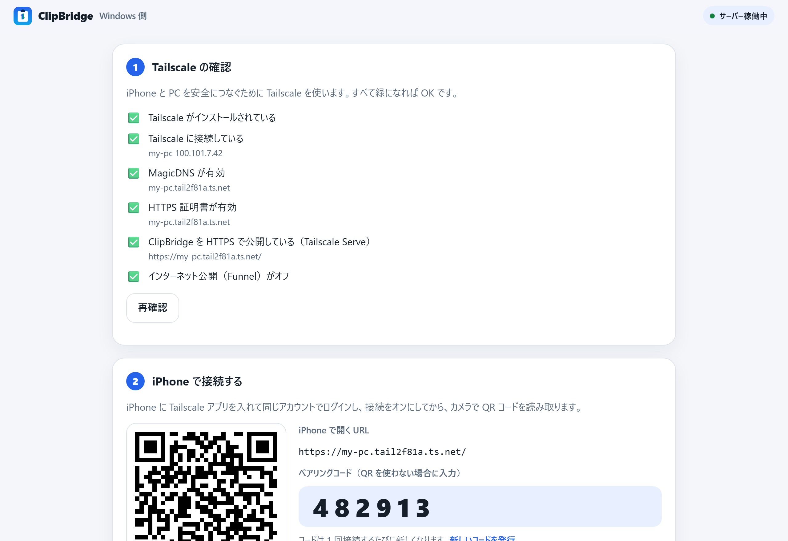

PC の文字を、iPhone へ
PC で Ctrl+C すると、iPhone の画面に「新着」として届きます。「iPhone にコピー」をタップすれば手元に。URL、メモ、コード、何でも。

ClipBridgeiPhone × Windows ・ クリップボード共有
PC で Ctrl+C した文字や画像が、開いている iPhone の画面にすぐ届きます。iPhone でコピーした文字や写真も、ボタンひとつで PC のクリップボードへ。自分の端末どうしだけでつながる、小さな橋です。

文字と画像を、いつも使っている端末へ。操作は画面のボタンだけです。
PC で Ctrl+C すると、iPhone の画面に「新着」として届きます。「iPhone にコピー」をタップすれば手元に。URL、メモ、コード、何でも。
iPhone でコピーした文字は「PC へ送る」で PC のクリップボードに入ります。貼り付け欄にペーストするだけでも自動で送信。あとは PC で Ctrl+V。
写真ライブラリから選んで PC へ。「PC に保存する」か「クリップボードだけ」かを選べます。PC でコピーしたスクリーンショットは iPhone に届き、写真に保存できます。
iPhone 側はホーム画面のアイコン 1 つのまま。上部の PC 名をタップして接続先を切り替えます。同じ Tailscale ネットワークの PC は自動で見つかります。
受け取る・送る・切り替える。毎日使う操作を 1 つの画面にまとめました。ホーム画面に追加すれば、アプリのように開けます。



PC 側から順番に進めます。所要時間は 10 分ほど。PC セットアップ画面が状態を確認しながら案内します。
ZIP を展開して ClipBridge.exe を開くだけ。アプリは自動でこの PC に保存され、デスクトップにショートカットができます。ブラウザーに「PC セットアップ画面」が開き、Tailscale の状態を確認して HTTPS 公開まで自動で設定します。
配布版にコード署名はないため、Windows が発行元を確認できない旨を表示することがあります。接続設定はアップデート後も引き継がれます。
App Store の Tailscale に PC と同じアカウントでログインし、接続をオンにします。PC 画面の QR コードをカメラで読み取れば接続完了。読み取れないときは、表示された URL を Safari で開いて 6 桁のコードを入力します。
VPN 構成の追加を求められたら許可してください。Tailscale は別サービスで、利用条件は同社に従います。
Safari の共有ボタン →「ホーム画面に追加」。以後はアイコンを開くだけで、PC の文字や画像が届き、iPhone からも送れます。接続設定は引き継がれます。
2 台目の PC は、iPhone の上部の PC 名 →「PC を追加」から。その PC の画面に表示されている 6 桁コードを入力します。

ClipBridge はあなたの PC の上で動く小さなサーバーです。内容を預かるクラウドはありません。
文字と画像の受け渡しは、ずっと無料。PC が 3 台以上ある人や、履歴を使いたい人には Pro があります。
月額 480 円 ／ 年額 4,800 円（税込。年額は 2 か月分お得）
お支払いは Stripe の画面で行います。トライアル中に解約すれば料金はかかりません。期間が終わると自動で課金が始まり、以後は自動更新です。
常時自動同期する仕組みではありません。PC でコピーした内容は、開いている iPhone の画面に自動で届きます。iPhone から PC へは画面のボタンで送ります（iOS の制約で、ほかのアプリでのコピーをバックグラウンドで監視することはできません）。
インストールするアプリは Tailscale だけです。ClipBridge の画面は Safari で開き、ホーム画面に追加するとアプリのように使えます。
写真・画像は送れます。iPhone の「写真・画像を選んで送る」から選んだ画像は、PC の「ピクチャ › ClipBridge」に保存してクリップボードにも入れるか、保存せずクリップボードだけに入れる（そのまま Ctrl+V で貼り付け）かを選べます。PC で画像をコピーすると iPhone の画面に表示され、長押しして「“写真”に保存」で写真に残せます。画像以外のファイルには対応していません。
使えます。iPhone 側はホーム画面のアイコン 1 つのまま、画面上部の PC 名をタップして接続先を切り替えます。「PC を追加」を押すと同じ Tailscale ネットワークで ClipBridge が動いている PC が一覧に出るので、選んでその PC の画面に表示された 6 桁コードを入力するだけです。
両端末が同じ Tailscale ネットワークに接続できていれば、同じ Wi-Fi でなくても使えます。インターネット接続と、PC 側の HTTPS 公開設定（セットアップ画面が自動で行います）が必要です。
使う Windows PC の電源を入れ、ClipBridge を起動しておく必要があります。「Windows にサインインしたら自動で起動する」をオンにしておくと便利です。PC がスリープ中や Tailscale が未接続のときは送受信できません。
PC セットアップ画面に表示されている 6 桁のコードを入力するか、QR コードをもう一度読み取ります。コードは 1 回使うたびに新しくなります。ホーム画面に追加した版は接続設定を引き継ぐので、通常は再入力は不要です。
はい。Python 不要の Windows アプリ、セットアップ案内、Tailscale のチェックと修復、アップデートの確認と適用、文字と画像の受け渡し、PC 2 台までの切り替えは無料です。3 台目以降の PC や履歴などは ClipBridge Pro（月額 480 円 / 年額 4,800 円、14 日間無料）で使えます。アップデートは PC セットアップ画面の「アップデートして再起動」から適用できます。
無料版の機能に加えて、3 台目以降の PC の登録、クリップボードの履歴（直近 100 件の検索・再送・ピン留め）、画像の保存ルール、PC 側のホットキー、優先サポートが使えます。1 人分の契約で PC は何台でも使え、ライセンスキーの入力は 1 台だけで済みます。月額 480 円または年額 4,800 円（税込）で、最初の 14 日間は無料です。解約は PC のセットアップ画面の「契約を管理」からいつでもできます。
ダウンロードして exe を開けば、あとは画面の案内どおり。10 分後には iPhone に届いています。